基于超辐射晶格观测手性边缘流
所述论文
Experimental Observation of Momentum-Space Chiral Edge Currents in Room-Temperature Atoms
背景
量子霍尔效应
霍尔效应的示意图如图1，当电流垂直于外磁场通过导体或半导体时，在垂直于磁场和电流方向会出现一个稳定的电势差，其原理是因为洛伦兹力与电场力平衡。
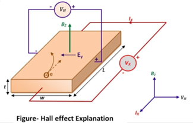
然而，我们之后发现其存在量子版本，在极低温和强磁场下，对于二维体系的霍尔效应实验中，我们发现其霍尔电阻并不随着磁场强度增大做线性变化，而是呈分立排布，这就是量子霍尔效应。
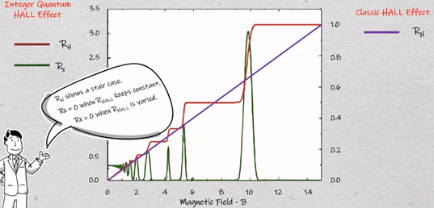
之后补充
手性边缘流
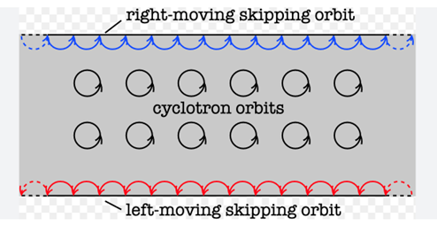
超辐射晶格
超辐射晶格的实验手段是通过驻波耦合的EIT，以此在动量空间中构建出具有不同动量的超辐射态。由于在超辐射晶格中，原子运动所引入的多普勒频移对应晶格中的有效电场，因此常可用于室温原子中进行量子模拟
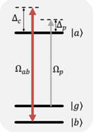
超辐射晶格在动量空间示意图如图所示，其格点是一个个不同动量的TDS态，我们通过弱probe光将原子系综从最初的基态激发到TDS态，再通过驻波耦合a,b两个能级改变超辐射态所包含的动量，由此在动量空间构造出紧束缚晶格。
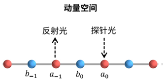
下面我给出了在该体系下的超辐射晶格在动量空间中的哈密顿量：
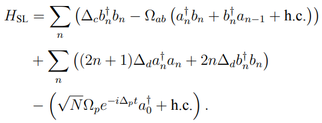
可以看到其类似实空间中经过二次量子化的紧束缚模型，其中包含了两套子晶格，第一项是子晶格之间的势能差，第二项是代表的是晶格间的hopping项，第四项对应了probe光的激发，而从第三项中可以看出原子运动引入的多普勒频移对应于晶格中的有效电场，由此我们可以实现室温下的量子模拟。
论文概要
在该论文中，如图所示，我们利用了一束近共振驻波和一束远失谐驻波做出了zigzag型超辐射晶格，两束驻波之间的相位差破坏了晶格的时间反演不变性，类似Haldene模型相当于在晶格中合成了一个磁场，由此起到了Aharonov-Bohm相位作用。我们在实验中通过探测不同方向上probe光的反射谱，可以探测出晶格链中向前和向后的传输几率，从而探测出超辐射晶格中边缘流的传输方向。

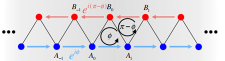
体系哈密顿量演化
对于体系的哈密顿量演化，其实空间哈密顿量如下：
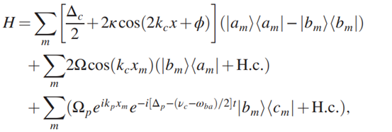
通过引入集体激发算符得到其动量空间哈密顿量
集体激发算符：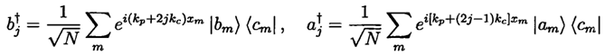
动量空间哈密顿量：
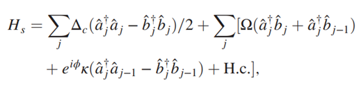
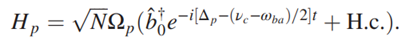
其中对应动量空间的紧束缚晶格，是probe光的激发项。
我们关注，其每一个格点对应不同动量的超辐射态：
我们可以看到，第一项对应于AB两组晶格间的势能差，第二项是两个子晶格之间的Hopping项，第三项是两个子晶格自身的Hopping项。
对于第三项，两个晶格自身的Hopping项中，其是一个复数，存在一个相位。这里非常关键，对于紧束缚模型中的hopping项，大都是实数，但是一旦出现复数，存在相位，就会打破时间反演对称性，如图所示，我们如果绕着正三角型跳跃旋转一周回到起点时，会发现其带上了一个相位Ф，而当我们反方向旋转一周时，会发现相位取了相反值。联想到AB效应，当一个带电粒子环绕封闭曲线一周，回到初始点时会产生一个相位，其正比于通过该曲面的磁通。由此我们通过打破时间反演对称性在晶格中构造了一个等效磁场，由此产生了手性边缘流。在图6中晶格中的箭头并非是手性边缘流的方向，而是我们构造的相位的正方向。
体系能带结构
下面我们通过对角化哈密顿量来求解出该体系的能带，我们在实空间中对对角化，以解出体系的本征能量与态矢。
解之得
引入作为赝自旋基矢，则体系的两个本征态为：
能带图像
我们定义spin texture ，以此来确定两个本征态何时处在子链A，何时处在子链B。如图所示为体系能带结构：
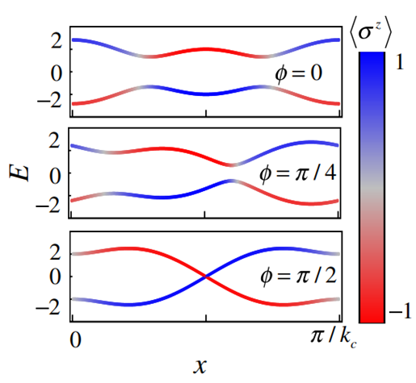


/head.jpg)